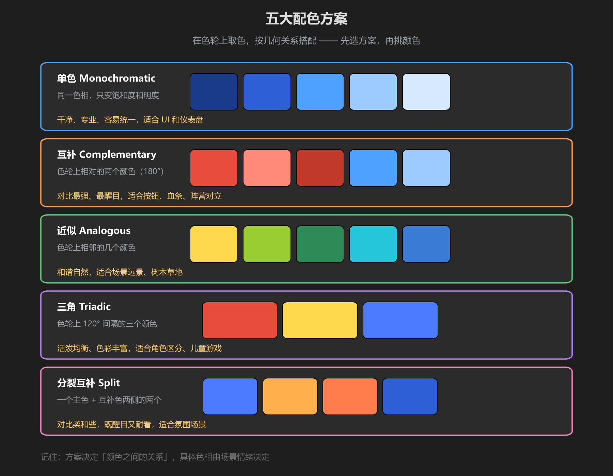
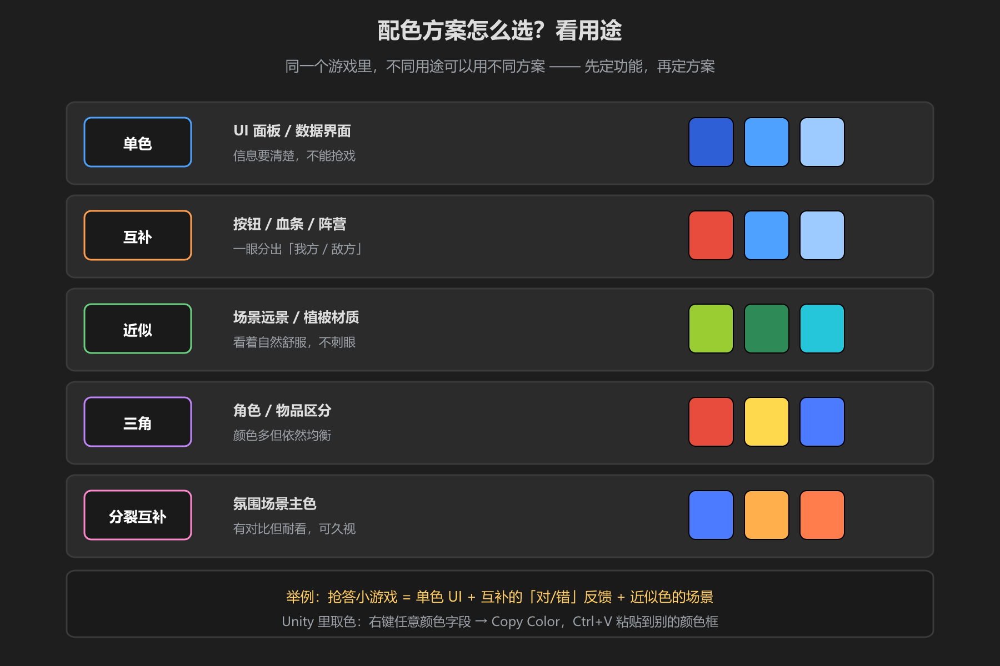

第 2 篇：配色方案 — 五大经典配色
单个颜色选好了，还要让一堆颜色和谐相处。配色方案就是在色轮上按几何关系取色的套路 —— 先选方案，再填颜色，新手也能配出不出错的组合。
1. 五大配色方案

图：单色 / 互补 / 近似 / 三角 / 分裂互补 —— 色块均为真实颜色
| 方案 | 规则 | 感觉 |
|---|---|---|
| 单色 | 同一色相，只变饱和度和明度 | 干净、专业、易统一 |
| 互补 | 色轮上相对的两色（180°） | 对比最强、最醒目 |
| 近似 | 色轮上相邻的几个色 | 和谐、自然、舒服 |
| 三角 | 色轮上 120° 间隔的三色 | 活泼、均衡、丰富 |
| 分裂互补 | 主色 + 互补色两侧两色 | 有对比但柔和耐看 |
重点理解「互补」：互补色是色轮上正对的两个颜色（如红配青、黄配紫）。它们放一起时互相把对方衬得最鲜艳 —— 所以按钮、血条、阵营标识这类「必须一眼分清」的地方最好用。
2. 不同用途怎么选方案

图：同一个游戏里，UI、反馈、场景可以各用各的方案
- UI 面板 / 数据界面 → 单色：信息优先，颜色不抢戏
- 按钮 / 血条 / 阵营 → 互补：一眼分出敌我
- 场景远景 / 植被 → 近似：自然不刺眼
- 角色 / 物品区分 → 三角：颜色多但仍均衡
- 氛围场景主色 → 分裂互补：能久看，不疲劳
3. Unity 里的取色工具
配色不是凭空想出来的 —— 从参考图里「偷」色板是最快的学习方式：
- 找到喜欢的游戏截图 → 用 取色器（颜色面板左下角吸管）在图上取色
- 记下每个颜色的 Hex 码，写进自己的色板备忘
- 右键任意颜色字段 →
Copy Color，在别的颜色框Ctrl+V粘贴，保证完全一致
新手最常犯的错：一个场景里塞了七八种毫不相干的颜色。记住「颜色越少越统一」—— 先用 3-5 个颜色起步，方案定了再加变体（变饱和度、变明度），而不是加新色相。
学前检查清单
- 能说出五大配色方案各自的取色规则
- 知道「互补色」适合什么场景、为什么
- 会用自己的场景截图取色并记下 Hex 码
- 用其中一种方案给自己场景选了 3-5 个颜色